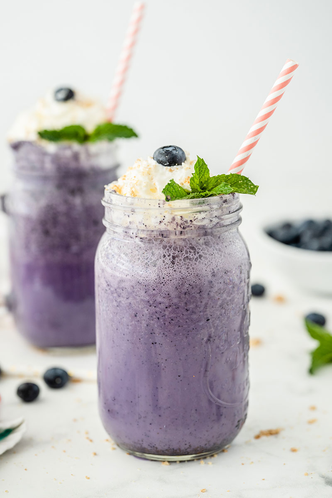

Blueberry Milkshake

Description
Made with real blueberries, all natural ice cream, milk and a touch of honey, you can indulge and be healthy too!
Ingredients:
- 2 cups all natural vanilla ice cream (I prefer Breyer's extra creamy vanilla)
- 2 cups frozen blueberries
- 2 cups milk
- 1 tbsp honey
Steps:
- Put all the ingredients in a blender or milkshake mixer and blend on high until smooth and creamy.
- Serve immediately.